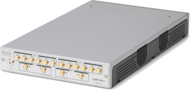
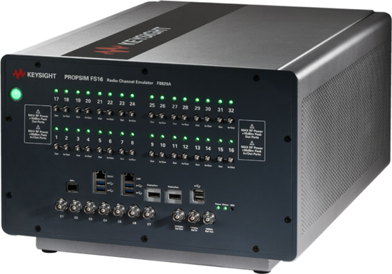
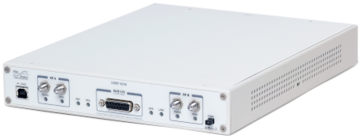
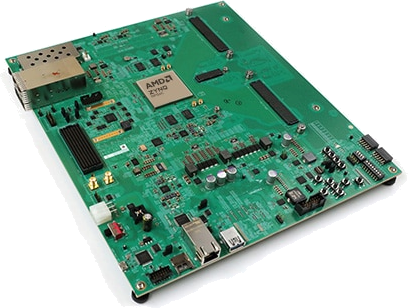

Setup
A 4×2 distributed MIMO link: one base station, two users, real radios and a channel emulator in between.
-

Base stationgNB · USRP N310
Four antennas. Sends pilots to both users and precodes its data with the channel they report back.
-

The channelKeysight PROPSIM F16
Every RF link passes through the emulator, which plays the same high-mobility fading scenario on every run.
-

Two usersUE · USRP X310 + host PC
Two antennas each. The host estimates the channel on 32 subbands from the pilots, one CSI frame at a time.
-

FPGA predictorWESN, one channel per user
A windowed echo state network retrains on the newest frames and predicts each user's next channel.
≤ 0.9 ms per frame, end to end
-
H(t)outdatedĤ(t+1)predicted
CSI feedbackback to the gNB
The user reports the predicted channel instead of the one it measured, and the gNB precodes with it.
≈ 27% lower NMSE than outdated CSI
The loop closes at the base station: every frame, for both users, in real time.
Signal flow
Demo
The live 10 GbE loop: channel frames stream to the FPGA and predictions come back, frame after frame.
Papers
The FPGA reservoir-computing work behind the demo.
- 2026
-
FPGA-based Reservoir Computing with On-chip Learning for MIMO Channel Prediction
Chunxiao Lin, Ummay Sumaya Khan, Meiyu Zheng, Muhammad Farhan Azmine, Lingjia Liu, Daniel J. Jakubisin, Yang Yi
IEEE Transactions on Computer-Aided Design of Integrated Circuits and Systems (TCAD)
-
FPGA-based High-speed Reservoir Computing for MIMO Channel Prediction
Chunxiao Lin, Ummay Sumaya Khan, Lingjia Liu, Yang Yi
International Conference on Computing, Networking and Communications (ICNC), pp. 465–470
-
- 2024
- 2023
- 2022